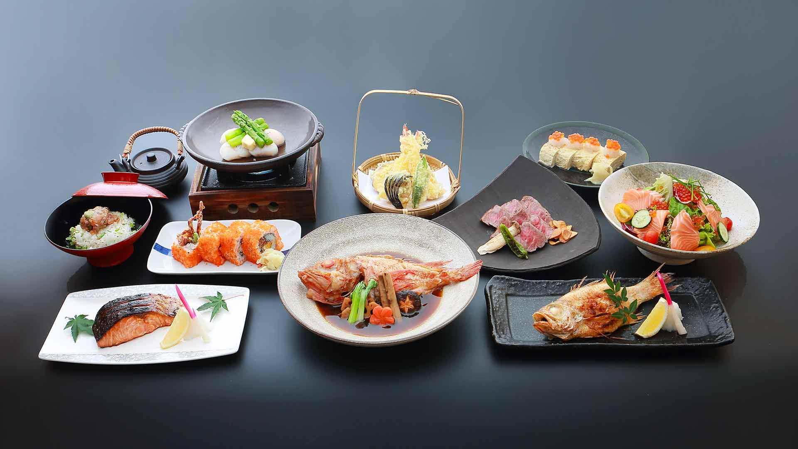

Crispy Sushi Rice Bites with Avocado – Crunch Meets Creamy

Crispy on the outside, soft and tender on the inside — these Sushi Rice Bites are the perfect balance of texture and flavor. Pan-seared sushi rice squares create a golden crust that pairs beautifully with creamy avocado.
Topped with spicy tuna or roasted vegetables, this modern appetizer is both eye-catching and delicious. It’s a fun, shareable dish that’s ideal for gatherings, dinner parties, or stylish snacking.
Why This Recipe Stands Out
Traditional sushi is known for its delicate texture, but crisping the rice adds a bold new dimension.
The contrast between crunchy rice and creamy toppings makes every bite dynamic and satisfying.
Key Ingredients
- Cooked sushi rice (seasoned with rice vinegar)
- Ripe avocado (sliced or mashed)
- Spicy tuna mixture or roasted vegetables
- Soy sauce
- Sesame oil
- Green onions
- Sesame seeds
How to Make It
Press seasoned sushi rice firmly into a lined tray and chill until set. Cut into small squares or rectangles.
Heat a thin layer of oil in a pan and cook each rice piece until golden and crispy on both sides. Top with avocado and your choice of spicy tuna or roasted vegetables before serving.

Serving Suggestions
Drizzle lightly with soy sauce or a touch of spicy mayo for extra flavor.
Garnish with green onions and sesame seeds for a fresh, elegant finish.
Texture & Flavor Experience
Expect a satisfying crunch followed by soft, vinegared rice and creamy toppings.
The balance of savory, creamy, and slightly tangy flavors makes these bites irresistible.
A Modern Sushi Reinvention
Crispy Sushi Rice Bites bring a contemporary twist to a beloved classic.
Stylish, flavorful, and perfect for sharing — they prove that even simple ingredients can create something truly memorable.